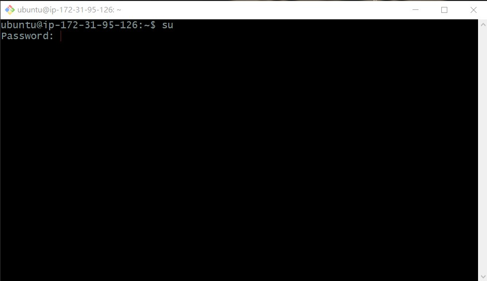
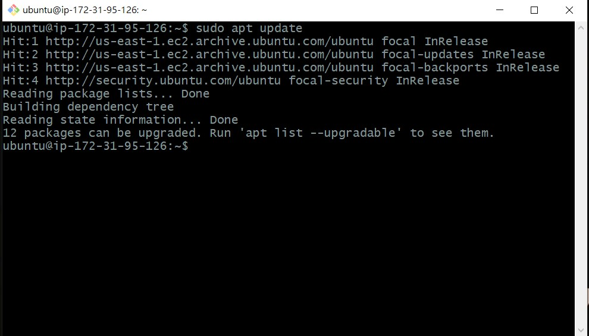

做個筆記。
簡述
在 一刀未剪的 AWS 部署紀錄 裡面有用到 Linux 指令，當時沒有特別解釋，所以這邊重新介紹一下。
這裡只會簡單介紹用法，比較細節的部份可以參考：Linux 的 su 與 sudo 指令教學與範例
sudo 與 su
這兩個都是跟「使用者權限」相關的指令。
一般作業系統都會做「權限管理」，像你要讀某些檔案或改某些設定時，系統會先檢查你的權限。如果你權限不足的話就不讓你做。
在 Linux 系統也一樣，權限最高的使用者是「root」，不過不建議你直接以 root 的身分登入，因為可以做任何修改，改錯東西的話可能會把整個系統玩壞。所以建議等真的有需要時才透過 su 或 sudo 來開啟 root 的權限。
附註：su 的全文是 super user，而 sudo 則是 super user do。
su 指令
用法很簡單，只要輸入 su 後再輸入密碼就可以取得權限：
1 | su |

sudo 指令
這就是我部署時用的，可以想成是「用 root 的權限執行某個指令」：
1 | # 複製檔案 |
apt 指令
apt 的全名是「Advanced Packaging Tool」，中文是「進階打包工具」。
其實就是套件管理器，所以可以把它想成是 Linux 版的 NPM，這樣就能馬上理解它是幹嘛用的了。
附註：apt 必須有 root 權限，所以得搭配 sudo 來使用。
例如在部署時有個步驟是安裝 tasksel 這個套件：
1 | sudo apt install tasksel |
這就跟你用：
1 | npm install jquery |
的概念 87 分像對吧？所以這就是它的用法。
接下來介紹一下部署時的用到的幾個指令。
sudo apt update
1 | sudo apt update |
這個指令會列出所有可以更新的套件：

網路上可能會看到 apt-get 的用法，不過它跟 apt 幾乎是一樣的東西。大概就跟 jQuery 的 $().click 差不多，只是把比較常用的指令抽出來而已。
sudo apt upgrade
如果要指定套件的話會在後面加上 <package>，沒有加就把可以更新的套件都更新：
1 | sudo apt upgrade |
sudo apt dist-upgrade
1 | sudo apt dist-upgrade |
這個可以想成是 sudo apt upgrade 的延伸。簡單來說：
sudo apt upgrade如果要更新的套件有相依性問題要處理，那就不更新（風險較低）sudo apt dist-upgrade有相依問題會自動幫你處理好，並且更新套件（風險較高）
所以根據需求來做選擇就好。